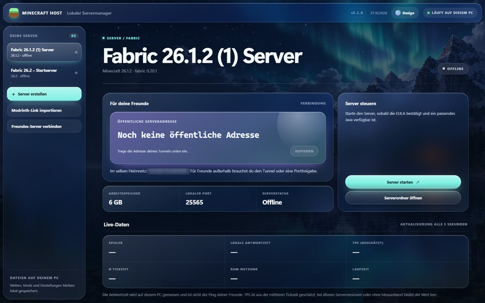
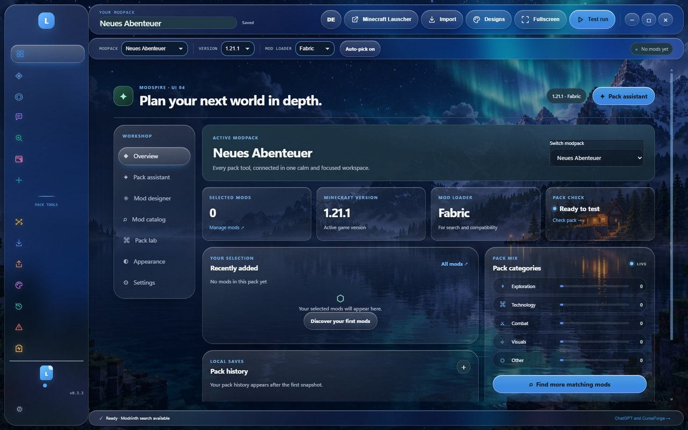
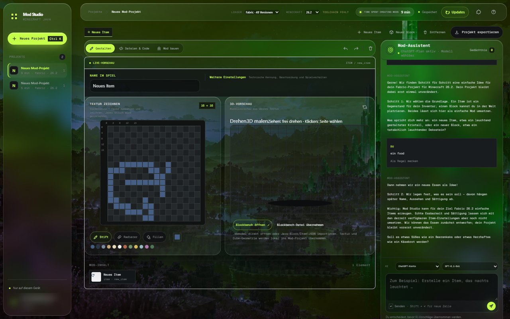

01 / Minecraft Host
Servermanager für Minecraft Java

Server auf deinem PC.
Modrinth-Packs importieren, Java automatisch finden und
Freunde über LAN, VPN oder Tunnel einladen.
- Modrinth-Links und .mrpack importieren
- Java-Versionen automatisch erkennen
- Konsole und Live-Daten im Blick behalten
- Freunde über VPN oder Tunnel verbinden
02 / Modspire
Modpack-Planer für Minecraft Java

Ein Plan für dein Modpack.
Modrinth durchsuchen, Pack-Varianten vergleichen und exakte
Versionen als .mrpack exportieren.
03 / Mod Studio
Mod-Editor für Minecraft Java

Eigene Mods. Lokal gebaut.
16 × 16 Texturen zeichnen, Blockbench-Modelle importieren und
unterstützte Fabric-Mods bauen.
04 / Villagers: Repurposed
Dorfleben-Mod für Minecraft Java

Ein Dorf, das mit seinen Bewohnern wächst.
Die Fabric-Mod gibt Dorfbewohnern ein Zuhause, einen Tagesablauf
und Aufgaben. Handel und neue Baupläne lassen die Gemeinschaft wachsen.